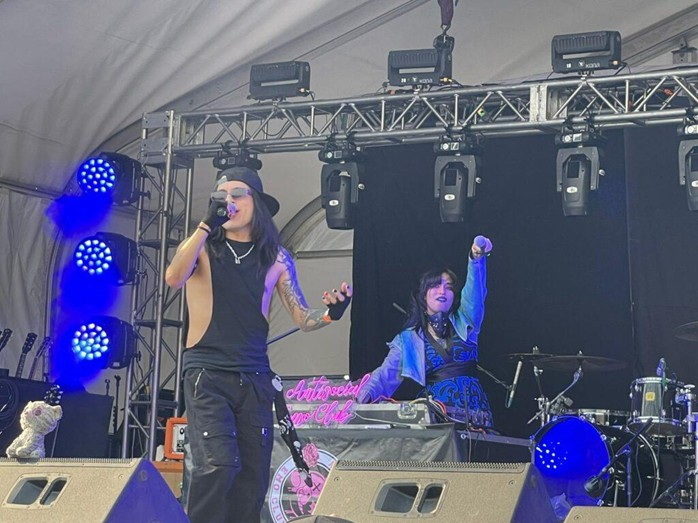
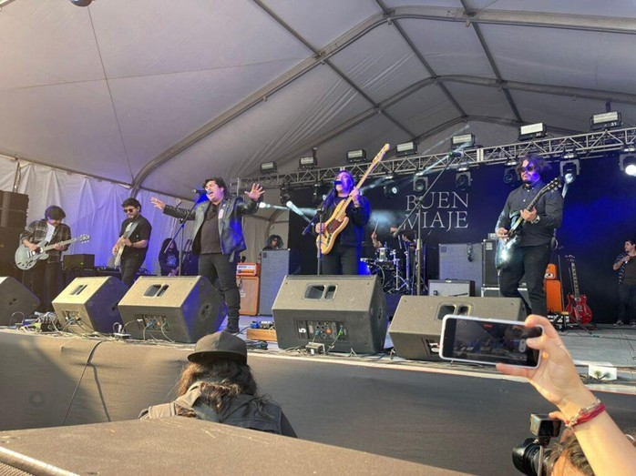
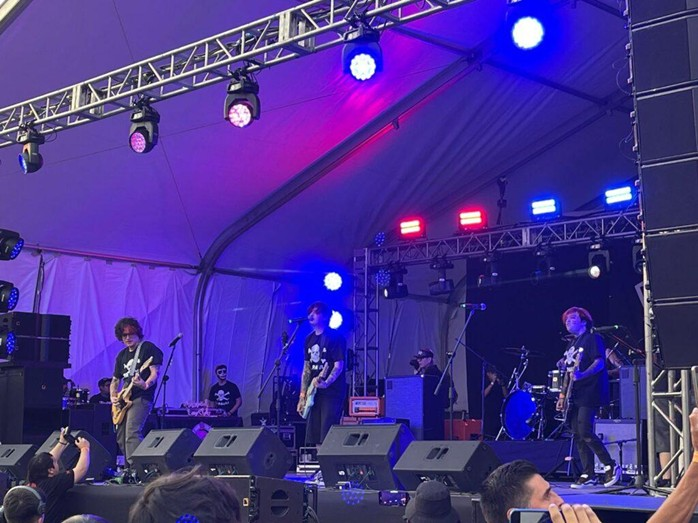
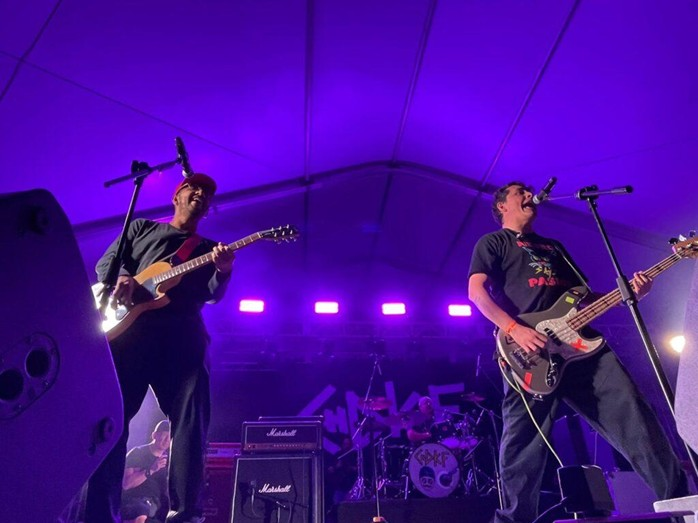
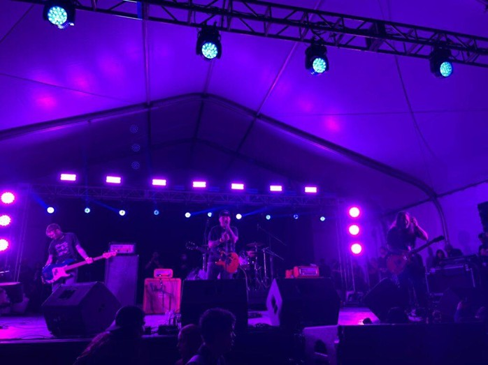
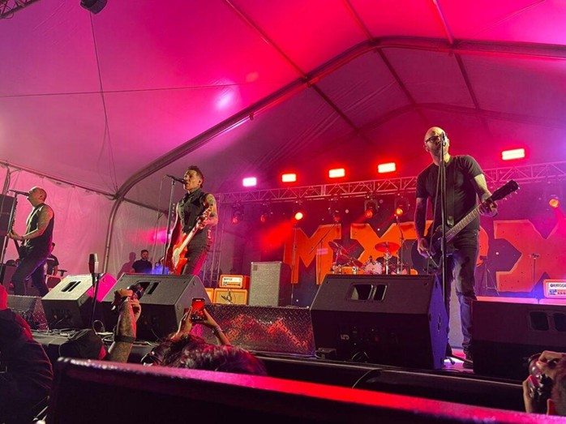

Talentos nacionales e internacionales se presentaron el pasado 29 de marzo para regalarnos una jornada de sonidos frescos y clásicos conocidos. Sin embargo, la noticia previa marcó el tono: el equipo de Sum 41 quedó varado en Asia y la banda no pudo llegar.
CAMBIO DE ÚLTIMO MOMENTO
Ante la ausencia de Sum 41, Antisocial Emo Club y el poderosísimo Chingadazo de Kung Fu se sumaron al cartel. Una adición heroica para salvar el festival.

Llegamos en una tarde MUY calurosa. Antisocial Emo Club ya estaba armando un DJ set que puso a todos a cantar Green Day y Paramore, preparándonos para lo que sería un día lleno de pank.
BUEN VIAJE
Mazatlán en el Velódromo: Abrieron con intro de banda y cerraron con un cover de ‘Desvelado’ de Bobby Pulido que todo el mundo coreó.

Después llegó BLNKO. Este morro tiene 25 años y toditita la actitud. Invitó a Marino (CHDKF) y Andrey (Lack of Remorse) para desatar la locura total, cerrando con un body surfing épico.

Llegó el turno de el casi heroico Chingadazo de Kung Fu, celebrando su décimo aniversario. Con Mike de Barney Gombo como invitado, el set fue un acierto total que dejó a la gente preparadísima para los headliners.

THE ATARIS
Nostalgia pura con el ‘So Long Astoria’. Cantar ‘The Boys of Summer’ bajo el cielo de la CDMX fue una verdadera fantasía.

Finalmente llegó el turno de MXPX. Los headliners compartieron su felicidad de estar en México y el público respondió saltando y coreando cada himno de la icónica banda.
